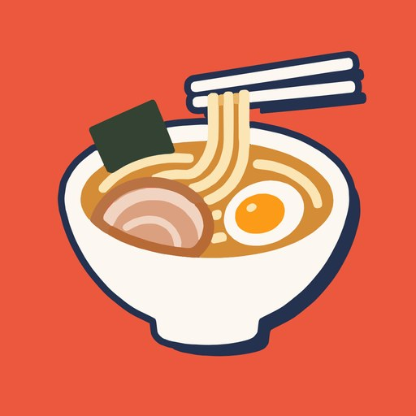
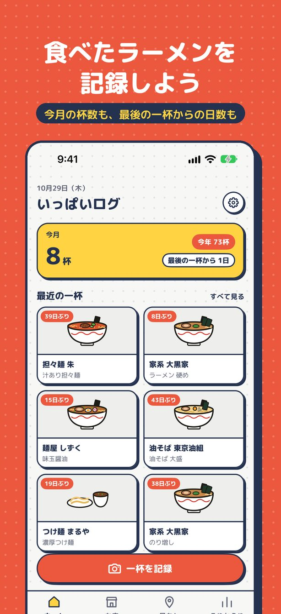
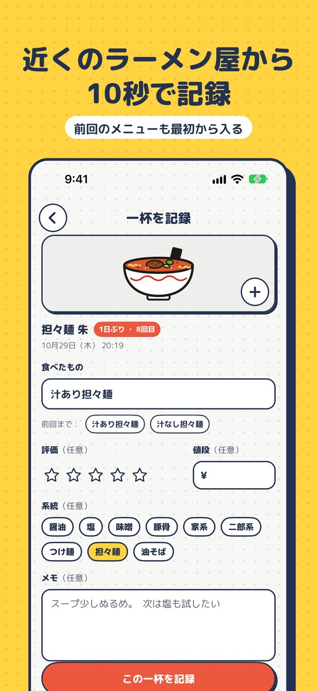
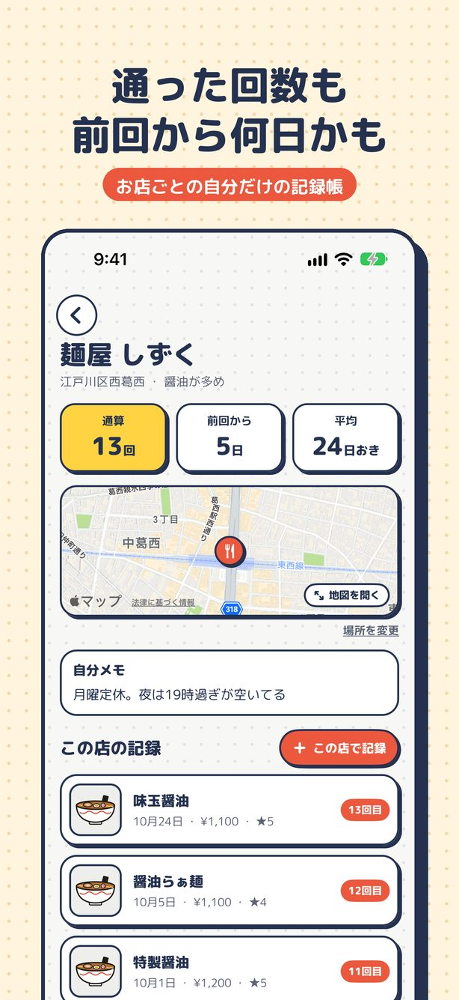
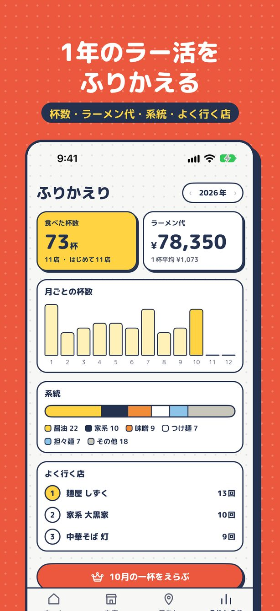
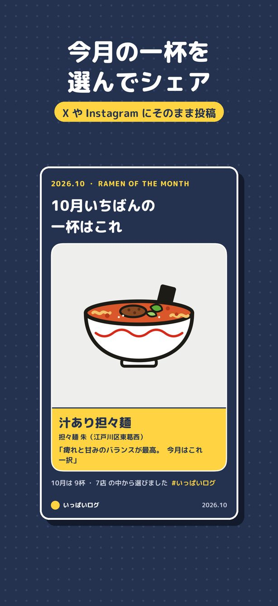
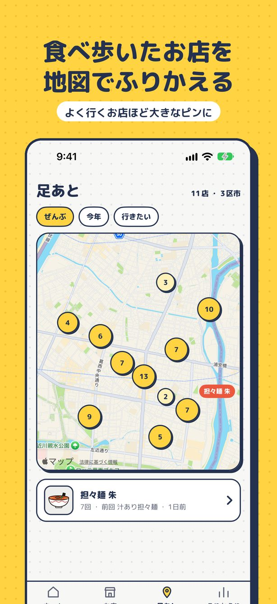

こんなことはありませんか
画面






主な機能
近くのラーメン屋から10秒で記録
「一杯を記録」を押すと、いまいる場所の近くのラーメン屋が並びます。お店を選んで、食べたもの・評価・値段・系統を入れるだけ。前回のメニューが最初から入っているので、いつもの一杯はすぐ終わります。
お店ごとの記録帳
通算の回数、前回から何日、平均で何日おきに通っているかがひと目でわかります。「ご無沙汰順」に並べれば、しばらく行っていないお店を思い出せます。定休日や駐車場のことは自分メモに。
今月の一杯・今年の一杯
その月にいちばん美味しかった一杯を選んで、写真とひとことを1枚の画像に。X や Instagram にそのまま投稿できます（#いっぱいログ）。年末には、毎月の一杯から「今年の一杯」を選べます。
1年をふりかえる
月ごとの杯数、ラーメン代、系統の割合、よく行くお店。食べた一杯は、月ごとのリストや写真のタイルで一覧できます。
足あとマップ
食べ歩いたお店を地図に。近くのお店はまとめて表示され、タップするとその辺りに寄っていきます。
行きたいリスト
Safari やマップでお店のページを開いて、共有から「いっぱいログ」を選ぶだけで追加。実際に行って記録すると、自動で「行けた！」に移ります。
写真がなくても並ぶどんぶり
撮り忘れても大丈夫。醤油・味噌・塩・豚骨・家系・二郎系・つけ麺・担々麺・油そばのイラストで記録が並びます。
着せ替え
パステル・くすみ・グレー・方眼・キャンディ・食堂。画面全体の雰囲気を好みに変えられます（プレミアム）。
こんな方に向いています
- ラーメンの食べ歩き（ラー活・麺活）が好きな方
- 行きつけのお店に、どれくらい通っているか知りたい方
- 食べたラーメンを SNS に投稿している方
- グルメアプリの記録は手間がかかって続かなかった方
- 行ってみたいお店をまとめておきたい方
料金
基本の記録はすべて無料で使えます。年額プランには7日間の無料お試しがあります。
無料
¥0
- 記録・お店ごとの記録帳
- 今月の一杯・今年の一杯
- 今年のふりかえり
- 足あとマップ・行きたいリスト
- 写真は1杯につき1枚
- 広告が表示されます
プレミアム
月額 ¥300年額 ¥2,400 ／ 買い切り ¥4,800
- 広告なし
- 写真を1杯につき5枚まで
- iCloud で同期・バックアップ
- 過去の年のふりかえり
- ぜんぶの着せ替え
よくある質問
ログインやアカウント登録は必要ですか？
必要ありません。ダウンロードしてすぐに記録を始められます。
データはどこに保存されますか？
お使いの iPhone の中に保存されます。プレミアムで iCloud 同期をオンにすると、ご自身の iCloud にも保存されます。開発者が用意したサーバーはなく、記録や写真を開発者が見ることはできません。
位置情報は何に使いますか？
「一杯を記録」を押したときに、近くのお店を探すためだけに使います。許可しない場合も、店名で検索して記録できます。
ラーメン以外も記録できますか？
ラーメン屋以外のお店も、店名で検索すれば記録できます。系統のタグは設定から編集できます。
プレミアムをやめたら記録は消えますか？
消えません。付けた写真もそのまま残ります。広告が表示され、新しく付けられる写真が1枚までになるなど、無料の状態に戻ります。
サブスクリプションの解約方法は？
iPhone の「設定」→ 自分の名前 →「サブスクリプション」から解約できます。更新日の24時間前までに解約すると、次の更新はされません。
サポート
不具合の報告、ご要望、使い方のご質問は、お問い合わせフォームからお寄せください。個人で開発・運営しているため、すべてに返信できるとは限りませんが、いただいた内容はすべて目を通しています。
メールの場合は support@gekisoba.com 宛にお送りください。
データの取り扱いについてはプライバシーポリシー、ご利用の条件については利用規約をご覧ください。